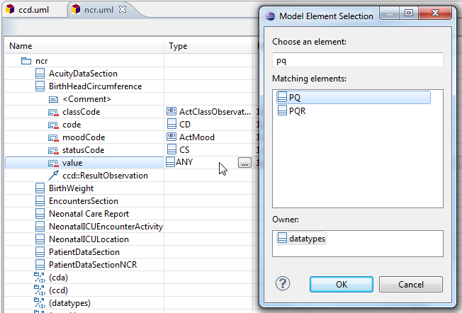

Constrain the data type of a template attribute to be more
restrictive than the same attribute in its parent class.
-
Select the table row for the attribute you want to constrain.
-
Select the Type table cell in that row using the mouse or by
navigating with the keyboard arrow keys.
-
Either double-click in that cell or press Enter to open a type
selection dialog.
In this example, we
are restricting the BirthHeadCircumference
value data type from ANY to PQ. We expect to add more selection
guidance in future milestones; for now, you are responsible for selecting an
appropriate type restriction. In the future, model validation will also verify
model integrity, including template constraints.
